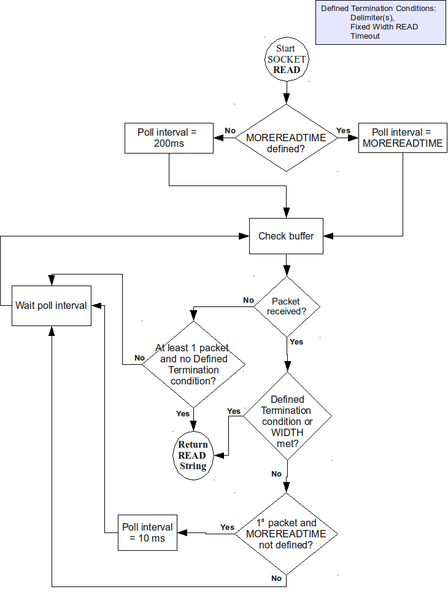

Permission is granted to copy, distribute and/or modify this document under the terms of the GNU Free Documentation License, Version 1.3 or any later version published by the Free Software Foundation; with no Invariant Sections, no Front-Cover Texts and no Back-Cover Texts.
GT.M™ is a trademark of Fidelity Information Services, Inc. Other trademarks are the property of their respective owners.
This document contains a description of GT.M and the operating instructions pertaining to the various functions that comprise the system. This document does not contain any commitment of FIS. FIS believes the information in this publication is accurate as of its publication date; such information is subject to change without notice. FIS is not responsible for any errors or defects.
| Version | Date | Summary |
| 1.6 | June 15, 2011 | Added more information on S9I08-002695. |
| 1.5 | July 14, 2010 | Improved the description of C9K01-003225. |
| 1.4 | April 5, 2010 | Added more information about using GT.M on IBM pSeries AIX. |
| 1.3 | March 25, 2010 | Added an entry for S9K03-002761. |
| 1.2 | March 19, 2010 |
|
| 1.1 | February 19, 2010 |
|
| 1.0 | February 2, 2010 | First published version. |
|
GT.M Group Fidelity Information Services, Inc. 2 West Liberty Boulevard, Suite 300 Malvern, Pennsylvania 19355 United States of America
|
GT.M Support for customers: +1 (610) 578-4226 / gtmsupport@fnis.com
Switchboard: +1 (610) 296-8877 Website: http://fis-gtm.com
|
UNIX: The term UNIX is used here in the general sense of all platforms for which GT.M uses a POSIX API. As of this date, this includes: AIX; HP-UX on IA64 and PA-RISC; GNU/Linux on IA64, x86 and x86_64; Solaris on SPARC; z/OS.
Command Syntax: UNIX syntax (that is, lowercase text and "-" for flags/qualifiers) is used throughout this document. OpenVMS accepts both lowercase and uppercase text; flags/qualifiers on OpenVMS should be preceded with "/".
Reference Number: Reference numbers used to track software enhancements and customer support requests appear in parentheses ().
Platform Identifier: If a new feature or software enhancement does not apply to all platforms, the relevant platform or platforms appear in brackets [].
Henceforth, the term "originating instance" is used where previously "primary instance" or "originating primary instance" were used, and the term "replicating instance" is used where previously "secondary instance" and "originating secondary instance" were used. Since it is easier to change documentation than it is to change software, and given our tradition of maintaining compatibility especially for existing programs and scripts, the former terms will remain in the software for a long time to come, even as they are supplemented with the new terms in the code, and replaced in the documentation.
GT.M V5.4-000A provides timely remediation of a small number of issues with V5.4-000 (highlighted as V5.4-000A).
In V5.4-000A, there is no change in the adaptive (auto-tuning) behavior of the MOREREADTIME deviceparameter introduced in V5.4-000. However, in this bulletin, we have added an improved description of the "MOREREADTIME" deviceparameter. For more information, see "GT.M Documentation Addendum".
GT.M V5.4-000 adds a major new feature to GT.M, as well as a significant enhancement to operational capability for 24x365 database operation.
GT.M triggers are code fragments stored in databases files. When a process updates a global variable, any triggers in that database file whose signatures match the update are automatically executed along with the update. The signature of a trigger consists of the command (e.g., Set, Kill), the global variable, and a subscript pattern, as well as, for Set, optionally a piece separator and pieces of interest. Triggers have many uses, only one of which is to maintain the consistency of application schema by automatically computing cross-reference indexes and maintaining referential integrity. Refer to the GT.M Triggers Technical Bulletin for details.
Please note: FIS considers the implementation of triggers in V5.4-000/V5.4-000A to be robust, and entirely appropriate for development and testing short of production deployment. With the next release of GT.M, they will have had gone through many more cycles of automated regression testing under a broader range of conditions, and will be considered production grade at that time. If you are an FIS customer and are ready to deploy in production an application that uses GT.M triggers, please contact your FIS account manager about the timing and availability of a GT.M release in which triggers will be considered production grade. Depending on circumstances, we may even decide then that the implementation of triggers in V5.4-000/V5.4-000AA is robust enough for production. Except for the triggers functionality, everything else in V5.4-000/V5.4-000A is considered production grade.
There are of course bug fixes, remedied mis-features and smaller enhancements. For a comprehensive list, see Change History.
Please note: The deprecated "Z" pseudo-transactions (bracketed by ZTSTART / ZTCOMMIT) are not supported in this release. FIS strongly urges you to remove their use from your code - since they have been deprecated for many years, they are no longer tested and may be removed from GT.M at any time.
As of the publication date, FIS supports this release on the following hardware and operating system versions. Contact FIS for a current list of supported platforms.
|
Platform |
Supported Versions |
Notes |
|
Hewlett-Packard Integrity IA64 HP-UX |
11V3 (11.31) |
|
|
IA64 GNU/Linux - Red Hat Enterprise Linux |
Red Hat Enterprise Linux 5.3 |
GT.M should also run on recent releases of other major Linux distributions with a contemporary 2.6 Linux kernel, glibc (version 2.5-24 or later) and ncurses (version 5.5-24 or later). We have verified that GT.M passes comprehensive testing on RHEL 5.x on machines that have single cells (no more than 8 CPUs). Multi-cell machines are not considered suitable for production use until they are certified.
|
|
Hewlett-Packard PA-RISC HP-UX |
11.11 |
GT.M supports UTF-8 mode and M mode on this platform subject to the following:
Running GT.M on HP-UX 11i requires that patch PHKL_28475 be applied to the system. This patch fixes a problem with the lseek64() C library call that GT.M uses. A system without this patch gives fairly consistent database errors of varying types, structural damage, and in general does not work correctly for any but the most simplistic usage. The swlist -p command (executed as root) can be used to determine if this patch has been applied. Since recent "BATCH" and "GOLDEN" patches may contain this patch, your system may already have this patch applied but may not list it separately. Contact your HP support channel for more information.
GT.M does not support database encryption on this platform.
GT.M does not support the Memory Mapped (MM) Access Method on this platform.
Although this platform remains at present fully supported with respect to bug fixes, owing to its looming sunset by the vendor, new functionality is supported on this platform only for FIS' convenience. Please contact your FIS account manager regarding future support.
|
|
Hewlett-Packard Alpha/AXP Tru64 UNIX |
5.1B |
GT.M supports M mode but not UTF-8 mode on this platform. GT.M does not support database encryption on this platform.
Although this platform remains at present fully supported with respect to bug fixes, owing to its looming sunset by the vendor, new functionality is supported on this platform only for FIS' convenience. Please contact your FIS account manager regarding future support. |
|
Hewlett-Packard Alpha/AXP OpenVMS |
7.3-1/7.3-2/8.2/8.3 |
GT.M supports M mode but not UTF-8 mode on this platform. GT.M does not support several recent enhancements on this platform, including but not limited to database encryption, on-line backup, multi-site replication, PIPE devices and triggers.
If you need to work with external calls written in C with Version 6.x of the Compaq C compiler on Alpha OpenVMS, then you must carefully review all the provided kits for that product and apply them appropriately.
Although this platform remains at present fully supported with respect to bug fixes, owing to its looming sunset by the vendor, new functionality is supported on this platform only for FIS' convenience. Please contact your FIS account manager regarding future support.
|
|
IBM System p AIX |
5.3, 6.1 |
Since GT.M processes are 64-bit, FIS expects 64-bit AIX configurations to be preferable.
|
| IBM System z z/OS | V1R10 | At this time, FIS is not providing a distribution of GT.M for this platform. Contact your FIS account executive if you need such a distribution. |
|
Sun SPARC Solaris |
9 (Update 3 and above) and 10 (Update 6 and above) |
GT.M supports the deprecated DAL calls in M mode but not in UTF-8 mode. Please refer to the Integrating External Routines chapter in the Programmer’s Guide for appropriate alternative solutions.
|
|
x86_64 GNU/Linux |
Red Hat Enterprise Linux 5.4; Ubuntu 8.04 LTS through 9.10 |
To run 64-bit GT.M processes requires both a 64-bit kernel as well as 64-bit hardware.
GT.M should also run on recent releases of other major Linux distributions with a contemporary 2.6 Linux kernel, glibc (version 2.5-24 or later) and ncurses (version 5.5 or later).
To install GT.M with Unicode (UTF-8) support on RHEL 5.4, in response to the installation question Should an ICU version other than the default be used? (y or n) please respond y and then specify the ICU version (e.g., respond 3.6) to the subsequent prompt Enter ICU version (at least ICU version 3.6 is required. Enter as <minor-ver>.<major-ver>):
|
|
x86 GNU/Linux |
Red Hat Enterprise Linux 4 |
This 32-bit version of GT.M runs on either 32- or 64-bit x86 platforms; we expect the X86_64 GNU/Linux version of GT.M to be preferable on 64-bit hardware.
GT.M should also run on recent releases of other major Linux distributions with a contemporary 2.6 Linux kernel, glibc (version 2.3.4-2 or later) and ncurses (version 5.4-1 or later). The minimum CPU must have the instruction set of a 686 (Pentium Pro) or equivalent. Contact FIS for support of older CPUs.
Although RHEL 5.x is officially not supported for the 32-bit x86 GNU/Linux GT.M, we are aware of no reason why GT.M will not run on it.
This is the last GT.M release for RHEL 4.x. Future GT.M releases will require RHEL V5.x. |
The same application code runs on both 32-bit and 64-bit platforms. Please note that:
You must compile the application code separately for each platform. Even though the M source code is exactly the same, the generated object modules are different even on the same hardware architecture - the object code for x86 and x86_64 is different.
Parameter-types that interface GT.M with non-M code using C calling conventions must match the data-types on their target platforms. Mostly, these parameters are for call-ins, external calls, internationalization (collation), and environment translation and are listed in the tables below. Note that most addresses on 64-bit platforms are 8 bytes long and require 8 byte alignment in structures whereas all addresses on 32-bit platforms are 4 bytes long and require 4-byte alignment in structures.
|
Parameter type |
32-Bit |
64-bit |
Remarks |
|
gtm_long_t |
4-byte (32-bit) |
8-byte (64-bit) |
gtm_long_t is much the same as the C language long type, except on Tru64 UNIX, where GT.M remains a 32-bit application. |
|
gtm_ulong_t |
4-byte |
8-byte |
gtm_ulong_t is much the same as the C language unsigned long type. |
|
gtm_int_t |
4-byte |
4-byte |
gtm_int_t has 32-bit length on all platforms. |
|
gtm_uint_t |
4-byte |
4-byte |
gtm_uint_t has 32-bit length on all platforms |
|
Parameter type |
32-Bit |
64-bit |
Remarks |
|
gtm_descriptor in gtm_descript.h |
4-byte |
8-byte |
Although it is only the address within these types that changes, the structures may grow by up to 8 bytes as a result of compiler padding to meet platform alignment requirements. |
|
Parameter type |
32-Bit |
64-bit |
Remarks |
|
gtm_string_t type in gtmxc_types.h |
4-byte |
8-byte |
Although it is only the address within these types that changes, the structures may grow by up to 8 bytes as a result of compiler padding to meet platform alignment requirements. |
Recompile all M and C source files.
Rebuild all Shared Libraries (UNIX) or Shareable Executable Images (OpenVMS) after recompiling all M and C source files.
To install GT.M, see the "Installing GT.M" section in the GT.M Administration and Operations Guide.
Use the MUPIP RUNDOWN command of the old GT.M version to ensure all database files are cleanly closed.
In UNIX editions, make sure gtmsecshr is not running. If gtmsecshr is running, first stop all GT.M processes including the DSE, LKE and MUPIP utilities and then perform kill <pid_of_gtmsecshr>.
GT.M for IBM pSeries AIX requires the Asynchronous IO facility to be available and configured. Before installing GT.M on IBM pSeries AIX, run the following command to check the filesets of this facility: lslpp -l bos.rte.aio
If there are no filesets, then install them from AIX installation media. Then, use SMIT to configure the Asynchronous IO facility. Use SMIT as follows:
smit aio (for gui mode) or
smitty aio (for text mode)
For a system that has the "posixaio" option instead of "aio" (also called "legacy aio"), use SMIT as follows:
smit posixaio (for gui mode) or
smitty posixaio (for text mode)
In addition to configuring the aio0 device, select "Change/Show characteristics of Asynchronous I/O" change the value of "State to be configured at system restart" from "defined" to "available". This ensures that the aio0 device will be available when you next reboot the system.
Since GT.M is not a thread safe application, starting multiple threads in a process, or sometimes even loading libpthreads can cause process failure with symptoms such as SIG-11. On AIX, sometimes seemingly innocuous actions can pull libpthreads into a process and cause it to fail. Two known cases are (a) use of non-POSIX (Olson) names such as America/Chicago for the TZ environment variable - please use POSIX names such as CST6CDT instead - and (b) using LDAP to authenticate userids. Other cases probably exist.
If you expect a database file or journal file to exceed 2GB, then you must configure its file system to permit files larger than 2GB. Furthermore, should you choose to place journal files on file systems with a 2GB limit, since GT.M journal files can grow to a maximum size of 4GB, you must then set the journal auto switch limit to less than 2 GB.
To upgrade from a GT.M version prior to V4.3-001, you must update any customized copy of GTM$DEFAULTS to include a definition for GTM$ZDATE_FORM.
You can ignore the following section if you choose the standard GT.M configuration or answer yes to the following question:
Do you want to define GT.M commands to the system
If you define GT.M commands locally with SET COMMAND GTM$DIST:GTMCOMMANDS.CLD in GTMLOGIN.COM or other command file for each process which uses GT.M, you must execute the same command after installing the new version of GT.M before using it. If you define the GT.M commands to the system other than during the installation of GT.M, you must update the system DCLTABLES with the new GTMCOMMANDS.CLD provided with this version of GT.M. See the OpenVMS "Command Definition, Librarian, and Message Utilities Manual" section on "Adding a system command." In both cases, it is important for each process to match the proper GTMCOMMANDS.CLD with the version of GT.M it runs.
The GT.M database consists of four types of components— database files, journal files, global directories, and replication instance files. The format of each database component may differ for each GT.M version and even for 32-bit/64-bit GT.M platforms on the same hardware architecture.
Read the upgrade instructions of each stage carefully. Your upgrade procedure for GT.M V5.4-000A depends on your GT.M upgrade history and your current version.
To upgrade from any prior GT.M version:
If you inadvertently open a global directory in an earlier format, with no intention of upgrading it, execute the QUIT command rather than the EXIT command.
You need to upgrade your database files only when there is a block format upgrade (such as V4->V5). However, some versions, for example, the ones which have been initially been created with V4 (and subsequently upgraded to a V5 format) may additionally need a MUPIP REORG –UPGRADE operation to upgrade previously used but free blocks that may have been missed by earlier upgrade tools.
To upgrade from a GT.M version prior to V5.000:
To upgrade from GT.M V5.0*/V5.1*/V5.2*/V5.3*:
Note: When upgrading from a 32-bit GT.M version to a 64-bit GT.M version you always need to recreate the replication instance files. This includes upgrades from V5.3-000 or prior versions to GT.M V5.3-001 or later on AIX or 64-bit Linux and upgrades from V5.3-001 or prior versions to GT.M V5.3-002 or later on Solaris. After creating new replication instance files, always start it with the -UPDATERESYNC qualifier. Using pre-existing instance files (as opposed to creating new instance files) could cause any process that reads the instance file (which includes the source server, receiver server, update process and GT.M processes on an originating instance) to abnormally terminate with errors ranging from REPLINSTSECMTCH to a SIG-11 (which would create a corefile).
In the following three scenarios, your source server process terminates abnormally if you do not recreate the replication instance file:
In these cases, shut down all receiver servers on other instances looking for updates from this instance, shut down this instance, recreate the instance file and then restart the receiver server on this instance with the -UPDATERESYNC qualifier.
Note: Without the UPDATERESYNC qualifier, the replicating instance synchronizes with the originating instance using state information from both instances and potentially rolling back information on the replicating instance. The UPDATERESYNC qualifier declares the replicating instance to be in a wholesome state matching some prior (or current) state of the originating instance; it causes MUPIP to update the information in the replication instance file of the originating instance and not modify information currently in the database on the replicating instance. After this command, the replicating instance catches up to the originating instance starting from its own current state. Use UPDATERESYNC only when you are absolutely certain that the replicating instance database was shut down normally with no errors, or appropriately copied from another instance with no errors.
To upgrade from any prior GT.M version:
With International Components for Unicode (ICU) version 3.6 or later installed, GT.M's UTF-8 mode provides support for Unicode (ISO/IEC-10646) character strings on selected platforms. On a system that does not have ICU 3.6 or later installed, or on other platforms, GT.M only supports M mode.
On a system that has ICU installed, GT.M installs support for both M mode and UTF-8 mode, including a utf8 subdirectory of the directory where GT.M is installed. From the same source file, depending upon the value of the environment variable $gtm_chset, the GT.M compiler generates an object file either for M mode or UTF-8 mode. GT.M generates a new object file when an object file is older than the source file and was generated with the same setting of $gtm_chset/$ZCHset. A GT.M process triggers an error if it encounters an object file generated with a different setting of $gtm_chset/$ZCHset than that processes' current value.
Always generate an M object module with a value of $gtm_chset/$ZCHset matching the value processes executing that module will have. As the GT.M installation itself contains utility programs written in M, their object files also conform to this rule. In order to use utility programs in both M mode and UTF-8 mode, the GT.M installation ensures that both M and UTF-8 versions of object modules exist, the latter in the utf8 subdirectory. This technique of segregating the object modules by their compilation mode prevents both frequent recompiles and errors in installations where both modes are in use. If your installation uses both modes, consider a similar pattern for structuring application object code repositories.
GT.M is installed in a parent directory and a utf8 subdirectory as follows:
Actual files for GT.M executable programs (mumps, mupip, dse, lke, and so on) are in the parent directory, that is, the location specified for installation.
Object files for programs written in M (GDE, utilities) have two versions - one compiled with support for Unicode in the utf8 subdirectory, and one compiled without support for Unicode in the parent directory. Installing GT.M generates both the versions of object files, as long as ICU 3.6 or greater is installed and visible to GT.M when GT.M is installed.
The utf8 subdirectory has files called mumps, mupip, dse, lke, and so on, which are relative symbolic links to the executables in the parent directory (for example, mumps is the symbolic link ../mumps).
When a shell process sources the shell scripts gtmprofile or gtmcshrc, the behavior is as follows:
If $gtm_chset is "m", "M" or undefined, there is no change from the previous GT.M versions to the value of the environment variable $gtmroutines.
If $gtm_chset is "UTF-8" (the check is case-insensitive),
$gtm_dist is set to the utf8 subdirectory (that is, if GT.M is installed in /usr/lib/fis-gtm/gtm_V5.4-000A_i686, then gtmprofile and gtmcshrc set $gtm_dist to /usr/lib/fis-gtm/gtm_V5.4-000A_i686/utf8).
The last element of $gtmroutines is $gtm_dist($gtm_dist/..) so that the source files in the parent directory for utility programs are matched with object files in the utf8 subdirectory.
Version: 11.31 (11iv3)
Compiler: cc HP C/aC++ B3910B A.06.12, aCC HP C/aC++ B3910B A.06.15, GNU Make 3.81
Instructions:
Ensure that system environment variable $PATH includes the location of all the compilers mentioned above.
Download the source code of ICU (in this example, version 3.6 for C from http://icu.sourceforge.net/download/3.6.html#ICU4C)
At the shell prompt, execute the following commands:
Set the environment variable $LD_LIBRARY_PATH to point to the location of ICU. HP-UX uses the environment variable $LD_LIBRARY_PATH to search for dynamically linked libraries to be loaded.
ICU is now installed in /usr/local.
By default, ICU is installed in /usr/local. If you install ICU in a different directory, type:
Then execute the gmake commands, and set the environment variable $LD_LIBRARY_PATH to point to the appropriate location.
Note: All GT.M versions prior to V5.3-004 require exactly ICU 3.6, however, V5.3-004 (or above) accept ICU 3.6 or later.
As of this writing (November, 2009), ICU version 3.6 can be compiled on HP Integrity IA64 HP-UX with the following configuration:
gunzip -d< icu4c-3_6-src.tgz | tar -xf -
By default, ICU is installed in /usr/local. If you install ICU in a different directory, type:
runConfigureICU HP-UX/ACC --prefix=<install_path> --disable-threads
Note: Although GT.M uses ICU, ICU is not FIS software and FIS does not support ICU. The instructions for installing and configuring ICU are merely provided as a convenience to you.
The environment variable $TERM must specify a terminfo entry that accurately matches the terminal (or terminal emulator) settings. Refer to the terminfo man pages for more information on the terminal settings of the platform where GT.M needs to run.
GT.M sends keypad_xmit before terminal reads for direct mode and READs (other than READ *) if EDITING is enabled. GT.M sends keypad_local after these terminal reads.
If you plan to use the optional compression facility for replication, you must provide the compression library. The GT.M interface for compression libraries accepts the zlib compression libraries without any need for adaptation. These libraries are included in many UNIX distributions and are downloadable from the zlib home page. If you prefer to use other compression libraries, you need to configure or adapt them to provide the same API provided by zlib. Simple instructions for compiling zlib on a number of platforms follow. Although GT.M uses zlib, zlib is not FIS software and FIS does not support zlib. These instructions are merely provided as a convenience to you.
Solaris/cc compiler from Sun Studio:
HP-UX(IA64)/HP C compiler:
AIX/XL compiler:
Linux/gcc:
By default, GT.M searches for the libz.so shared library (libz.sl on HPUX PA-RISC) in the standard system library directories (for example, /usr/lib, /usr/local/lib, /usr/local/lib64). If the shared library is installed in a non-standard location, before starting replication, you must ensure that the environment variable $LIBPATH (AIX and z/OS) and $LD_LIBRARY_PATH (other UNIX platforms) includes the directory containung the library. The source and receiver server link the shared library at runtime. If this fails for any reason (such as file not found, or insufficient authorization), the replication logic logs a DLLNOOPEN error and continues with no compression.
Fixes and enhancements specific to V5.4-000A are:
| S9K03-002761 | Using buffered reads for accessing the source code required for $TEXT(), ZPRINT, and error reporting. |
| S9D10-002376 | Checking for defined variables and empty strings in local variable subscripts now conforms to the M standard. |
| S9K02-002754 | Prevent GDE from losing maximum length NAME entries. |
| S9K02-002755 | $QUIT on x86 and x86-64 GNU/Linux returns a uniformly appropriate result. |
| S9K02-002756 | Prevents a process from hanging (or failing) on a compilation error in a line longer than 1023 characters. |
| S9K02-002757 | Better clean up orphaned snapshot files from an INTEG that terminates abnormally. |
| S9K03-002759 | VIEW "NOLVLULLSUBS", "NOUNDEF" combination correctly issues an error for a SET using an undefined local variable as a subscript. |
| C9K02-002758 | During installation correctly set setuid bit for the gtmsecshr wrapper and appropriate permission settings for GDE help in utf-8 mode. |
| C9H10-002920 | Prevent error for blanks lines in a GDE command file and correctly resume an interrupted (<CTRL-C>) command file. |
| C9J07-003156 | Replication source server improvements for database files in WAS_ON replication state. |
| C9K02-003239 | Prevent a rare SIG-11 that occurs when MUPIP BACKUP -ONLINE and MUPIP INTEG -ONLINE run concurrently with M transaction processing. |
Fixes and enhancements specific to V5.4-000 are:
| S9C11-002251 | Error in place of GTMASSERT for full LOCK_SPACE |
| S9D08-002354 | Error from $GET() when 2nd argument is undefined local variable |
| S9I08-002695 | New Trigger facility |
| S9I09-002699 | No more inappropriate error from VIEW "FLUSH" or "JNLWAIT" |
| S9J07-002732 | Adaptive MOREREADTIME for SOCKET device |
| S9J07-002737 | More user-friendly UNIX distribution kit |
| S9J11-002749 | Cleanup of OPEN for [UNIX] PIPE device |
| C9902-000839 | ONLINE option now usual default for [UNIX] MUPIP INTEG |
| C9B12-001842 | MUPIP INTEG TN_RESET leaves proper state for BACKUP BYTESTREAM |
| C9D07-002356 | SOCKET CONNECT improvements |
| C9D08-002390 | Facility to trigger UNIX diagnostics on processes holding scarce resources |
| C9E02-002513 | TRUNCATE for sequential files corrected for Linux |
| C9F07-002746 | $INCREMENT() now starts with a numeric value when adding a string to an undefined global variable |
| C9H06-002868 | SOCKET device waiting to CONNECT now responds to MUPIP INTRPT |
| C9H07-002875 | UNIX call-in protects against multiple gtm_init or gtm_exit calls |
| C9H10-002913 | UTF-8 terminal input protected from loss on INTRPT |
| C9J04-003108 | $ECODE and $STATUS() protected from change by INTRPT |
| C9J04-003110 | MUPIP checks journal files for correct ENDIAN |
| C9J04-003118 | Performance improvement for sequential file READ in UTF-8 mode |
| C9J06-003140 | UNIX installation makes files executable only if successful |
| C9J06-003145 | UNIX gtmsecshr protects itself against over-length input in addition to existing wrapper protection |
| C9J07-003148 | ZWRITE of undefined alias variables |
| C9J08-003166 | Improve REPLINSTNOHIST error message |
| C9J08-003170 | Permit z/OS object modules to exceed 32 KB |
| C9J08-003174 | Improve handling of the loading of ICU used by UTF-8 mode |
| C9J08-003178 | Improve error message for UNIX IPC issue after an improper shutdown |
| C9J08-003179 | New ^%XCMD utility to XECUTE shell command line input |
| C9J09-003188 | Improve CLOSE for [UNIX] PIPE device |
| C9J09-003190 | Cleanup gtmcrypt_close memory management in the encryption plug-in interface |
| C9J09-003195 | Improve timing on passive replication server shutdown |
| C9J09-003197 | Easy of use improvements for managing basic GT.M environments |
| C9J09-003198 | UNIX deals with invalid group or owner for files |
| C9J09-003199 | Improvements to UNIX shell interface to protect against over-length input in utility commands |
| C9J09-003201 | UNIX installation deals with missing "bin" user or group |
| C9J10-003202 | Prevent rare cases of DBINVGBL errors |
| C9J10-003203 | Properly maintain $REFERENCE after reverse name-level $ORDER() of a global |
| C9J10-003208 | DSE protects against failure when encountering certain bad data |
| C9J11-003211 | Exclusive KILL behavior within an extrinsic function now controlled by an environment variable |
| C9J11-003214 | Prevent rare cases of an inappropriate TPFAIL GGGG error |
| C9J12-003215 | Improve performance for very large numbers of local variables |
| C9J12-003217 | New QUIT * and SET *$$ to return an alias from an extrinsic function |
| C9K01-003220 | Prevent rare cases of DBKEYORD or DBBADNSUB |
| C9K01-003222 | MUPIP BACKUP ensures instance file synchronized with database |
| C9K01-003225 | Maximum UNIX $STORAGE value of 2GB -1 |
GT.M triggers are code fragments stored in databases files. When a process updates a global variable, any triggers in that database file whose signatures match the update are automatically executed along with the update. The signature of a trigger consists of the command (e.g., Set, Kill), the global variable, and a subscript pattern, as well as, for Set, optionally a piece separator and pieces of interest. Triggers have many uses, only one of which is to maintain the consistency of application schema by automatically computing cross-reference indexes and maintaining referential integrity. Refer to the GT.M Triggers Technical Bulletin for details.
A MUPIP RECOVER which stops due to an error before making any database modifications also leaves the file header unchanged. Previously, MUPIP RECOVER marked the database header with the "corrupt" flag and did not clear it for that case. (S9I08-002695)
GT.M no longer issues JNLCNTRL errors when VIEW "JNLWAIT" commands are executed after a journal file switch. Previously, in rare cases, GT.M incorrectly issued a JNLCNTRL error. (S9I09-002699)
GDE now preserves the mapping of multiple lexically adjacent maximum length global names. In prior versions, GDE created such ranges correctly but lost track of them when reloading the global directory for examination or a subsequent update. The workaround was to always reestablish such ranges after invoking GDE. This issue was reported from a pre-V5 environment where the maximum name length was eight characters rather than the current 31 characters. There is less chance of encountering this issue on versions V5.0-000 and later. (S9K02-002754) V5.4-000A
GDE now ignores blank lines in command files. After being interrupted while processing a command file, it also properly closes the file and appropriately resumes the next action. In prior versions, GDE treated blank lines as errors and could fail with a GDECHECK error if a command file was interrupted at certain points with <CTRL-C>. (C9H10-002920) V5.4-000A
A GT.M process now reports a more helpful ERR_REQRUNDOWN error when it fails to attach to a shared memory segment (because of a prior improper shutdown e.g. kill -9). On detecting such a situation, prior versions instead reported the less helpful ERR_DBFILERR. [UNIX] (C9J08-003178)
As long as the operating system permits the access, GT.M now allows access to database files and journals in cases where the system has no user or group information available for the file. Such an unusual situation can arise, for example, when the user and group are provided via NIS, but if NIS is not currently operational the owner and group cannot be determined; or perhaps a user id is deleted while the GT.M process is active. V5.3-004[A] issued a signal-11 in such a case. [UNIX] (C9J09-003198)
GT.M now maintains database integrity even when multiple GT.M processes simultaneously attempt to create the same global variable. This fixes a regression in GT.M V5.3-000 (also present in V5.3-004A and introduced as part of the fixes to C9H09-002901) where, in such situations, it was possible under rare circumstances for the GT.M process to cause database damage (for example, DBINVGBL or DBKEYORD errors). Note that this was an issue only for non-TP updates, that is those which were not surrounded by a TSTART/TCOMMIT. (C9J10-003202)
GT.M now deals correctly with a set of rare cases where it could inappropriately interpret negative numbers in database block control structures as large positive numbers. Previous versions might terminate with memory access violations, or get into indefinite or inappropriately long loops. This was discovered in testing DSE against a database with intentionally inflicted damage, which we expect is characteristic of the unusual conditions that might expose this issue. (C9J10-003208)
GT.M now issues a LOCKSPACEFULL error to the application and the operator log when the environment attempts more concurrent M LOCKs than the configured LOCK_SPACE for the region can support. Previously under these conditions, GT.M gave a fatal GTMASSERT error. (S9C11-002251)
GT.M now reports an error if the first argument of a two argument $GET() is defined and the second is an undefined local variable. Prior versions returned the value of the first argument and ignored the error mandated by the standard. If the second argument was a global variable, this worked properly in earlier versions. Note that any code that relies on the prior behavior needs updating. (S9D08-002354)
GT.M now reports UNDEF errors when it encounters an undefined variable specified for a local variable subscript as it already does for a global variable and as defined in the language standard. In prior versions, KILL and its variants or functions including $DATA(), $GET(), $ORDER() and $QUERY() ignored these errors. Under NOUNDEF operation this change has no user impact. Note: code that relied on the earlier non-standard behavior may now give errors and require revision.
GT.M now supports VIEW "NEVERLVNULLSUBS" to issue the LVNULLSUBS error for any inappropriate use of empty string subscripts in local arrays. The [new] gtm_lvnullsubs UNIX environment variable can have the values 0 - equivalent to VIEW "NOLVNULLSUBS", 1 (the default) - equivalent to VIEW "LVNULLSUBS" or 2 - equivalent to VIEW "NEVERLVNULLSUBS". In VMS, the initial state of this characteristic is controlled by the GTM$DEFAULTS file. An empty string as the last subscript in $ORDER() and $QUERY() has the semantic significance of requesting the next lexical item and is not subject to NULLSUBS errors. $VIEW("LVNULLSUBS") returns the corresponding numeric value. In prior versions, GT.M only supported NOLVNULLSUBS, which reported the LVNULLSUBS error for SET commands that would have instantiated a prohibited local array subscript, but not for KILL and its variants or functions including $DATA(), $GET(), $ORDER() and $QUERY(). $VIEW("LVNULLSUBS") returned 0 for NOLVNULLSUBS and 1 for LVNULLSUBS. Note that code that expected $VIEW("LVNULLSUBS") to provide a truth value must be revised. Empty string subscript checking for global variables is controlled by a database region characteristic that was already comprehensive and is not affected by this change. Note that programs using empty subscripts for references where those references cannot possibly exist are wasting computer resources, so FIS recommends using LVNULLSUBS or NEVERLVNULLSUBS for local variables and NULLSUBS options ALWAYS or NEVER for global variables. (S9D10-002376) V5.4-000A
If the OPEN or USE for a SOCKET device does not specify a MOREREADTIME parameter, any READ uses an initial 200msec internal timeout to minimize CPU load. Subsequent attempts to acquire more characters to fulfill the same READ use a 10msec internal timeout. When a MOREREADTIME parameter specifies a value, READ uses that value exclusively. Previously READ used a default of 10msec when no MOREREADTIME parameter was specified and consequently could consume considerable CPU cycles, especially on a lightly loaded system. If your application currently uses the MOREREADTIME parameter, FIS suggest that you consider whether this new behavior provides better performance and/or reduces CPU usage and allows you to avoid specifying MOREREADTIME. (S9J07-002732)
The distribution tar file now provides all files owned by the innocuous user:group ids 40535:40535, with no executable or writable files. With the exception of AIX, no directories have write permissions. On AIX, unpacking the distribution file no longer requires root permissions. In prior versions, the configure script adjusted the authorizations, but the distribution had various settings, and, on AIX, required root access to unpack the distribution. [UNIX] (S9J07-002737)
GT.M now handles the OPEN of a PIPE device better in certain situations. In prior versions, specifying various device parameters such as ESCAPE for the $PRINCIPAL device when it was a terminal could result in delays or other problems. [UNIX] (S9J11-002749)
GT.M now ensures a proper value for $QUIT on x86 and x86-64 GNU/Linux. In V5.4-000 under certain circumstances, it could return an inappropriate result. [x86-64 Linux, x86 Linux] (S9K02-002755) V5.4-000A
On compiling an M program, GT.M now omits reports showing the point in the line of code that caused the warning or error for lines longer than 1023 characters; it still reports the line number and column number. In prior versions, attempts to report such long lines could overrun an internal buffer and cause the process to hang or fail. (S9K02-002756) V5.4-000A
The TRUNCATE parameter on USE for sequential file devices now works correctly for Linux. In prior versions, USE could truncate at the wrong position. [Linux] (C9E02-002513)
The GT.M SOCKET device behavior has improved in a number of ways.
SOCKET CONNECT operations now respond to MUPIP INTRPT; in prior versions they did not.
If the command does not specify a timeout, a SOCKET OPEN now waits for the connection to complete or an interrupting event that terminates the attempt. After an interrupt that does not terminate the connection attempt, such as the default value of $ZINTERRUPT ("IF $ZJOBEXAM()"), the process resumes the wait when the XECUTE of the $ZINTERRUPT completes. Previously, an untimed SOCKET OPEN <device>:CONNECT would make a single attempt to connect and return whether or not it was successful, as if it had a timeout of 0.
SOCKET CONNECT status values EINPROGRESS, EWOULDBLOCK and, on some platforms, EALREADY now wait for the connection to complete or for the specified timeout to expire. Previously, GT.M treated these conditions as errors.
If IOERROR="TRAP" is specified on a SOCKET OPEN or USE, it now invokes any active EXCEPTION, $ETRAP, or $ZTRAP if an error occurs on a CONNECT. The above status values as well as ECONNREFUSED and ETIMEDOUT are not considered as errors. Previously, status values other than ECONNREFUSED or ETIMEDOUT would always be treated as errors regardless of the IOERROR value. (C9D07-002356, C9H06-002868)
GT.M now allows only a single set of gtm_init/gtm_exit per process and any attempt to call gtm_init/gtm_ci after a gtm_exit returns the code associated with the CALLINAFTERXIT error. Earlier GT.M versions also did not support invoking gtm_init or gtm_ci after a gtm_exit but did not enforce the restriction.[UNIX] (C9H07-002875)
READ from a sequential disk file in UTF-8 mode read buffers the file reads for higher throughput. In prior versions, single character reads limited performance. [UNIX] (C9J04-003118)
The UNIX installation script for GT.M now sets the executable bits for files such as mumps and mupip only after a successful installation. Previously, the executable bits for these files were sometimes set after an unsuccessful installation. [UNIX] (C9J06-003140)
ZSHOW and ZWRITE now display information about alias variables with no associated data provided at least two of the joined variables are selected by the command argument. In prior releases these commands displayed alias containers with no data, but not alias variables with no data. When an alias exists with no data for the command to display, GT.M holds the variable so that it can become the right-hand side of a proper SET * command. However, if the command selection criteria excludes any other alias, GT.M has insufficient information to form a valid SET * argument and does not display that alias. Alias container variables always have a default value (the empty string), so they are handled differently and display as they did before. (C9J07-003148)
GT.M now handles very large object files correctly on z/OS. V5.3-003[A] produced invalid object files if the generated code exceeded 32KB. [z/OS] (C9J08-003170)
In UTF8 mode, when the minor version is not specified in the environment variable gtm_icu_version, e.g. 3 instead of 3.6, GT.M issues an ICUSYMNOTFOUND error. Previous versions of GT.M used to issue the ICUVERLT36 error even when the major version specified was greater than or equal to 4. [AIX, GNU/Linux, HP-UX, Solaris, z/OS] (C9J08-003174)
^%XCMD is a utility program that XECUTEs input from the shell command line and returns any error status (truncated to a single byte on UNIX) generated by that code. For example in UNIX: mumps -run %XCMD 'write "hello world",!' would produce "hello world" (C9J08-003179)
GT.M now correctly handles the CLOSE of a PIPE device whose STDERR device is the current device. Prior versions issued a segmentation violation in such a case. [UNIX] (C9J09-003188)
The file gtmprofile, which sets up a default environment for GT.M has been completely revamped to make it more robust and to make the out-of-box GT.M experience friendlier. gtmprofile now sets up default values for more environment variables, creates a default global directory if one does not exist and a default database with before image journaling, if one does not exist. The new executable shell script gtm uses gtmprofile and automatically recovers the database on startup. gtm also deletes prior generation journal and temporary files older than the number of days specified by the environment variable gtm_retention. A new file gdedefaults specifies default values for global directories. The new gtmprofile script is also idempotent (can be successfully rerun after an abnormal termination), unlike its predecessor. FIS recommends that system administrators review the gtmprofile and gdedefaults files after installing GT.M, and customize them as needed. The previous gtmprofile file remains available as gtmprofile_preV54000 - if you want to retain the previous behavior, simply replace gtmprofile with gtmprofile_preV54000. Note that at this time, the file gtmcshrc has not been similarly revamped for csh/tcsh users (the gtm script does not depend on the underlying shell). [UNIX] (C9J09-003197)
The distribution tar file may now be installed if there is no "bin" user and/or group defined. The operator may now enter an alternate user and/or group to own the installation and may also restrict access to this group. Previously the installation failed if the default bin user were specified and did not exist, or if the bin group did not exist - even if another restricted group was chosen. [UNIX] (C9J09-003201)
The new $gtm_stdxkill/GTM_STDXKILL environment/logical variable (UNIX/VMS) which if set to "TRUE", 1, or "YES" enables the standard-compliant behavior to kill local variables in the exclusion list if they had an alias that was not in the exclusion list. GT.M default behavior for exclusive kills thus reverts to its previous behavior, not compliant with the standard, where aliases and pass-by-reference variables specified in an exlusive kill are NOT killed even if their aliases are not specified in the exclusion list. In GT.M V5.3-004 (C9B09-001754), this behavior was changed to be compliant with the standard as part of the alias variables enhancement. Please note that the default value is FALSE, so you must explicitly ask for standard-compliant behavior. (C9J11-003211)
String pool expansion is now more responsive to the rate at which the application requires space for local variables. This enhancement significantly improves the performance of applications that ramp up to atypically large string pool requirements (in the hundreds of thousands of local variable nodes), while preserving the more parsimonious string pool usage of typical applications. (C9J12-003215)
GT.M now allows an unsubscripted local variable, alias or alias container to be returned using the QUIT * syntax to a function invocation initiated using a SET *lvn=$$func() syntax. The SET * associates the target "lvn" local variable to the data space specified by the returning QUIT *. Previously GT.M only allowed alias information to be returned using the M pass-by-reference mechanism or by an alias in scope in both the caller and called routines. Additionally, the $QUIT ISV now returns the value "11" to indicate the current routine was invoked by a SET * and is required to return an alias using a QUIT * syntax. Failure to provide a QUIT * return as requested by the invocation produces an ALIASEXPECTED error. Providing a QUIT * return when not requested by the invocation produces a QUITALSINV error. (C9J12-003217)
UNIX editions will not report a value for $STORAGE larger than (2GB - 1) [2,147,483,647], even if more is available. Previous versions could fail with SEG-V (SIG-11) errors while attempting to report $STORAGE values. [UNIX] (C9K01-003225).
The configure installation script now assigns the correct permissions to the gtmsecshr wrapper for a non-restricted group installation. It also creates symbolic links required for GTM and GDE help in utf-8 mode. Previously, the setuid bit was not set for the gtmsecshr wrapper on some platforms and [z]help would fail in utf-8 mode.[UNIX] (C9K02-002758) V5.4-000A
MUPIP and GT.M now clean up temporary snapshot files from INTEG under a wider variety of conditions. In V5.4-000, stopping the INTEG with a <CTRL-C> or a signal could leave the snapshot file orphaned. [UNIX] (S9K02-002757) V5.4-000A
MUPIP INTEG -REGION now supports the -ONLINE qualifier. This allows checking database structural integrity to run concurrently with database updates. Previously, INTEG froze updates on each region while checking it. Online integ is not supported with the -FILE qualifier. The -NOONLINE qualifier indicates that the database should be frozen during the MUPIP INTEG operation.
The -ONLINE qualifier is now the default for MUPIP INTEG, except for databases containing V4 blocks, for which the default is -NOONLINE. Note that databases containing V4 blocks should exist only in databases that are in the process of being migrated from V4 to V5; please complete your migration to the V5 format before using MUPIP INTEG -ONLINE.
The environment variable GTM_BAKTMPDIR (unlike most GT.M environment variables, this is upper case; it is the same directory used for MUPIP BACKUP -ONLINE) can be used to indicate a directory where MUPIP should place the snapshot files (used by online integ). If GTM_BAKTMPDIR does not exist, MUPIP places the snapshot files in the current directory at the time you issue the INTEG command.
As it checks each database file, MUPIP INTEG -ONLINE creates a sparse file of the same size as the database. As each GT.M process updates the database, it places a copy of the old block in the sparse file before updating the database. For any database blocks with a newer transaction number than the start of the INTEG, MUPIP uses the copy in the sparse file. Thus, analogous with MUPIP BACKUP -ONLINE, INTEG reports on the state of the database as of when it starts, not as of when it completes. Note: a command such as ls -l command shows sparse files at their full size, but does not show actual disk usage. Use a command such as du -sh to see actual disk usage.
Temporary directory security settings must allow write access by the the MUPIP process and read access by all processes updating the database. MUPIP creates the temporary file with the same access as the database file so processes updating the database can write to the temporary file. If the database is encrypted, the updating processes write encrypted blocks to the snapshot file and the MUPIP INTEG process must start with access to appropriate key information as it does even -NOONLINE.
Only one online integ can be active per database region. If an online integ is already active, a subsequent one issues an error and immediately terminates. If an online integ does not successfully complete, GT.M cleans it up in one of the following ways:
MUPIP INTEG -TN_RESET now resets block transaction numbers and backup event recorded transaction numbers to (one) 1, and the current transaction number to two (2) which makes the backup event recorded transaction numbers more meaningful and useful. It also issues an advisory message to perform a backup. Previously the backup event recorded transaction numbers were not maintained by -TN_RESET, which meant they held inappropriate information. Note that there should never be a need for a -TN_RESET on a datbase with only V5 blocks, even when cleaning up after a runaway process. (C9B12-001842)
GT.M now provides a new monitoring facility for processes holding a resource for an unexpected amount of time. This facility runs a shell command or a script pointed to by the new environment variable gtm_procstuckexe when any of the following conditions occur:
Typically, for the shell script or command pointed to by gtm_procstuckexec, you would write corrective and preventive actions or obtain the stack trace of the troublesome processes (using their PIDs). GT.M passes arguments to the shell command / script in the order specified below:
Each invocation generates an operator log message and if the invocation fails an error message to the operator log. The shell script should start with a line beginning with #! that designates the shell.
Note: Make sure you have sufficient space and permissions to run the shell command / script.
Prior versions wait for the condition to clear and in most cases send messages to the operator log. [UNIX] [C9D08-002390]
MUPIP now verifies that the byte ordering (endian-ness) of a journal file matches the byte ordering of the instance on which it is running and issues an error in case of a mismatch. In prior versions, such a case of operational cross-threading caused MUPIP to fail with various complaints about the journal file format or even a memory access violation (SIG-11 or ACCVIO). (C9J04-003110)
The replication source server now handles database files that are in WAS_ON replication state (and in turn a journaling state of OFF) in a safe manner. If it cannot find the journal records in the journal pool, it reads as many journal records as possible from the journal file chain and when it reaches the point where journaling got turned OFF, it periodically displays a REPL_WARN message until journaling gets turned back ON and then correctly issues a NOPREVLINK error. At all points, it behaves as a read-only process as far as journaling is concerned and never switches journal files. In previous versions of GT.M, it was possible for the source server to incorrectly attempt a switch of journal files in such WAS_ON regions eventually terminating with many types of errors (JNLFILOPN etc.). (C9J07-003156) V5.4-000A
The messages produced by a replicating instance when the originating instance encounters a REPLINSTNOHIST error now read:
Originating instance encountered a REPLINSTNOHIST error. JNL_SEQNO of this replicating instance precedes the current history in the originating instance file. uuuu exiting.
Where uuuu is either a rollback or the receiver server. [UNIX] (C9J08-003166)
MUPIP BACKUP -REPLINSTANCE now ensures its backup of the replication instance file is in sync with all databases backed up as part of the same command. This fixes a regression introduced in GT.M V5.3-000 (and present in V5.3-004A) that could in rare cases cause REPLINSTDBMATCH error when attempting to use the backed-up instance file because it held an incorrect sequence number for a database file. A workaround for this is to recreate the instance file, as the backed up databases are correct. (C9K01-003222)[UNIX]
GT.M now correctly handles an unusual set of circumstances that can occur if MUPIP BACKUP -ONLINE and MUPIP INTEG -ONLINE are running concurrently with M transaction processing. In V5.4-000, these unusual circumstances could cause a SIG-11. [UNIX] (C9K02-003239) V5.4-000A
GVDATAGETFAIL, Global variable DATAGET sub-operation (in KILL function) failed. Failure code: cccc.
Run Time Trigger Error: The target node for a KILL operation could not present its state to the trigger logic due to a database problem. cccc contains the failure codes for the failed attempts. The database may have integrity errors or the process-private data structures may be corrupted.
Action: Report this database error to the group responsible for database integrity at your operation.
JNLENDIANBIG, Journal file jjjj is BIG endian on a LITTLE endian system
JNLENDIANLITTLE, Journal file jjjj is LITTLE endian on a BIG endian system
MAXSSREACHED, Maximum snapshots - mmmm - for region rrrr reached. Please wait for the existing snapshots to complete before starting a new one.

| Terminating Conditions | Argument Contains | $Device | $Key | $Test |
| Error | Empty String | Error String | Empty String | 1 |
| Timeout* | Data received before timeout | Empty String | Empty String | 0 |
| Delimiter* | Data up to, but not including the delimiter | Empty String | Delimiter String | 1 |
| Fixed Length Met* |
String of Fixed Length
|
Empty String | Empty String | 1 |
|
Width |
Full width String |
Empty String | Empty String |
1 |
| Buffer Emptied |
One (1) to as many characters as provided by the transport interface before waiting for an interval (in milliseconds) specified by MOREREADTIME with no additional input. If MOREREADTIME is not specified, buffer is checked every 200 milliseconds for its first input and then every 10 milliseconds until no new input arrives and no other terminating conditions are met.
IF MOREREADTIME is specified, READ uses that value exclusively for buffer checks.
|
Empty String | Empty String | 1 |
A non-fixed-length read, with no timeout and no delimiters (the sixth row in the above table) requires a complex implementation of sequence of READs to ensure a predictable result. This is because the transport layer stream fragments delivered to the reader has only accidental correspondence with the operations performed by the writer. For example, the following:
Write "Message 1","Message 2" is presented to the reader as the stream "Message1Message2" but it can take from one (1) to 18 READ commands to retrieve the entire stream.